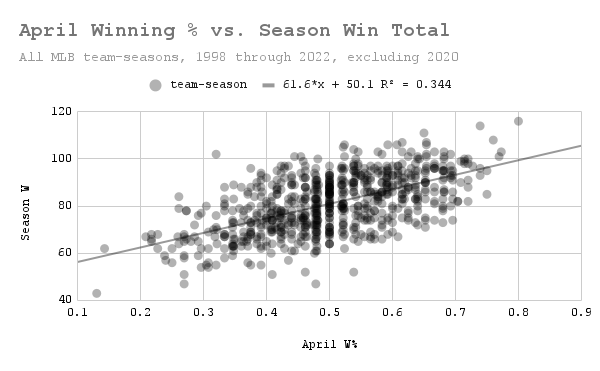
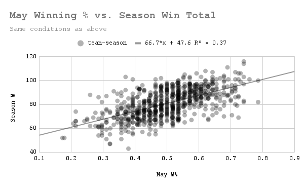
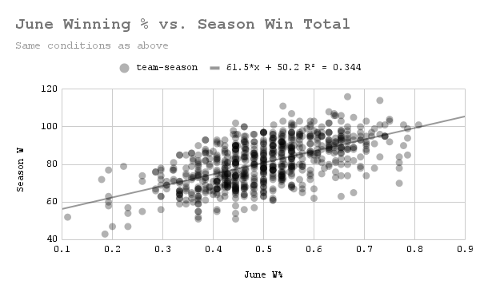
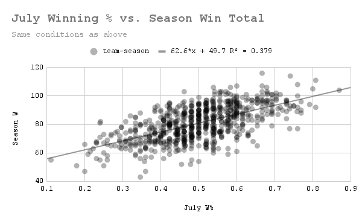
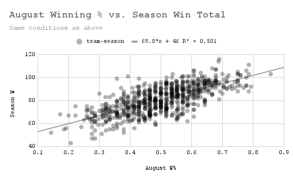
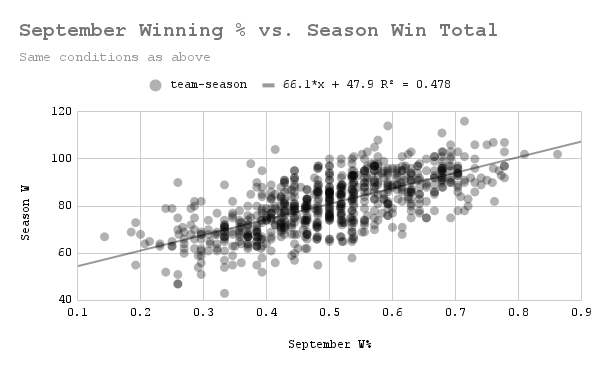
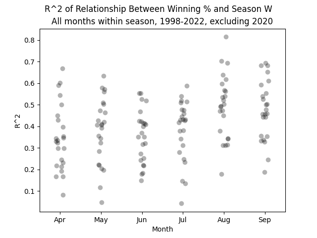

How Much Does April Performance Really Matter?
by A. Kline
Posted on 04/28/2023
A FiveThirtyEight article from earlier this month addressed this same question, although they did not go as in-depth as I would have liked. In summary, they used linear regression to show that any given team’s winning percentage in April is clearly correlated, though not strongly, with that same team’s total number of wins that season. It then discussed how April team performance affects their in-season projections, which are much like Baseball Analytica’s own projections except much more famous (maybe someday we’ll get there, I keep telling myself).
Digression aside, this result makes sense–we should expect better teams to do better on average in a given month. But by that logic, is April really that special? That’s a question the article never addressed. So I decided to find out for myself.
I started by obtaining all team data from the 30-team era, which is 1998-2022, inclusive (though excluding 2020 for obvious reasons). This is slightly smaller than the 1996-2022 sample size used in the original article, though I would argue my choice of cutoff date is more intuitive. Below is the graph of April winning percentage plotted against season win total for all teams in the sample, which is the same graph as is used in the article, though with the differences mentioned above:
Again, the relationship is clear, though by no means be-all-end-all. (Data: Baseball-Reference.com)
I proceeded by creating the same graph for May, and then June, July, August, and September. If my hypothesis is correct, then the correlation seen above would exist for all months. Without further ado, let’s see May’s graph:
That is incredibly similar to the previous graph. (Data: Baseball-Reference.com)
As I suspected, May performance is as correlated with season performance as April is (by R^2, it’s actually slightly better–0.37 vs. 0.344–though I would be surprised if this difference is actually statistically significant). How about June?
Looking good so far. (Data: Baseball-Reference.com)
The above regression line is almost identical to April’s–the slope and intercept are both only off by 0.1, and the R^2 is identical (when rounded to 3 decimal places). This level of exactness is almost certainly a coincidence, but the fact that they are so close to begin with, I would argue, is not. On to July.
The best correlation so far. (Data: Baseball-Reference.com)
As measured by R^2, July performance is the most closely-tied to season performance of the months we’ve seen yet (I’ll admit I was surprised by this fact. Since teams play fewer games in July on average due to the All Star break, I would have expected more variability in July performance’s predictive power due to the decreased sample size). Regardless, it became clear at this point that April performance has no special ability to forecast season performance–nor does any other month. But then I noticed something interesting.
Forget July–this is the clearest correlation we’ve seen so far, and the R^2 supports that. (Data: Baseball-Reference.com)
I realize I’ve been referring to R^2 a lot without actually talking about what it means. In the graph above, an R^2 of 0.501 means that in the sample from which data was taken, 50.1% of the variation in season win total can be explained by winning percentage in August alone*. This is a big departure from the values we were seeing before of around 0.35, and given the healthy sample size of team-seasons, it is very likely a statistically significant one. But is August a lone outlier? We only need to check one more month to find out.
When it comes to predicting season win total, September winning percentage is almost as useful as that of August. (Data: Baseball-Reference.com)
As it turns out, August is not an outlier–September is right up there with it. My first thought after seeing all of this was: is this statistically significant? Are these observations actually meaningful in any way? Are there actually months that are more correlated with cumulative season performance than others?
To answer this, I decided to perform an analysis of variance on the R^2 value for the relationship between a given month’s winning percentage and season win total across the whole league. I realize that was a mouthful, so here’s a concrete example of the datapoints I’ll be analyzing: in the graph below, the highest dot represents the R^2 value of over 0.8 that exists between every team’s winning percentage in August 2019 and their win total in 2019.
This graph looks a bit different than the ones above. That’s because I normally like to use Google Sheets for my graphs, simply because they look the best in my opinion. But unfortunately making a strip plot in Google Sheets seems to be literally impossible, so I went back to Python to create this. (Data: Baseball-Reference.com)
To analyze the variance of these R^2 values among different months, we need to find the squared difference between all datapoints and the monthly mean R^2 (not the same as the ones listed earlier), as well as the squared difference between all datapoints and the total mean R^2. Then, using the degrees of freedom associated with both values, we can calculate the corresponding F statistic. Essentially, if the monthly means are better predictors of the R^2 values than the overall mean (if its mean squared error is lower), we get a higher F statistic, meaning it is less likely each month has the same true mean R^2.
Here’s an analysis of variance table for the process, where the null hypothesis H_0 is that April mean R^2 = May mean R^2 = … = September mean R^2, or that monthly winning percentage has the same correlation with season win total across all months:
| Source | Sum of Squares | DF | Mean Square | F | p value |
| Between months | 3.275213 | 5 | 0.655043 | 32.32482 | 1.11e-16 |
| Within months | 2.796485 | 138 | 0.020264 | - | - |
| Total | 6.071697 | 143 | - | - | - |
It’s also important to discuss what the p value means in this context. If the null hypothesis is true, i.e. if the correlation between monthly winning percentage and season win total is the same for all months, then the probability of the observed monthly mean R^2 values being as unequal as they are in this dataset, purely by chance, is 1*10^-16 (or about 1 in 9 quadrillion). It’s entirely possible this p value is way lower than it should be. It’s also entirely possible analysis of variance was not an appropriate strategy here, at least not without appropriate data transformation**.
Regardless, it seems pretty clear at this point that the correlation between short-term winning percentage and season win total varies by month, and that April sees one of the weaker correlations. Of course, this says nothing about causality–playing poorly for the first two-thirds of the season before going on a tear in August is unlikely to save a struggling team’s record. And even if the data points towards August and September being the most important, I have no real hypothesis for why that would be. Maybe it’s because teams have “settled” into their equilibrium state by that point in the season? Of course, it’s very easy to find counterexamples to this–we’ve all heard of late-season collapses. Just last year, the Yankees did historically well most of the season before doing terrible in August, before reversing their course once more. To channel my inner scientist, further analysis is required before we make any conclusions about what might cause this monthly difference in correlation.
It’s worth reemphasizing that nothing about FiveThirthyEight’s analysis was incorrect. Performance in April does have a not insignificant impact on how teams perform that season in the aggregate, and absolutely should be a factor in how teams are projected. So does April performance really matter? Probably, but there are other months in which it seems to matter quite a bit more.
* Note that the R^2 values of all the months add up to way more than 1. This is because performance in one month is correlated with performance in another in any given season for any given team. Therefore, performance in month A can “explain” a not insignificant level of performance in month B, so if you wanted to find the actual amount that a given month (alone) accounted for seasonal performance, you would have to account for this overlap.
** I should note that I did try transforming the R^2 data before eventually going back to using the raw values. Since all R^2 values exist between 0 and 1, squares of differences are smaller than the differences themselves, not larger, which I thought could mess up the F statistic. I tried multiplying all the R^2 values by 100 to address this, though, and I got the exact same F statistic as before, so I just decided to go back to using the original values. But maybe linear transformations aren’t enough? I could not find much literature on performing ANOVA with R^2 values, so I’m not sure.